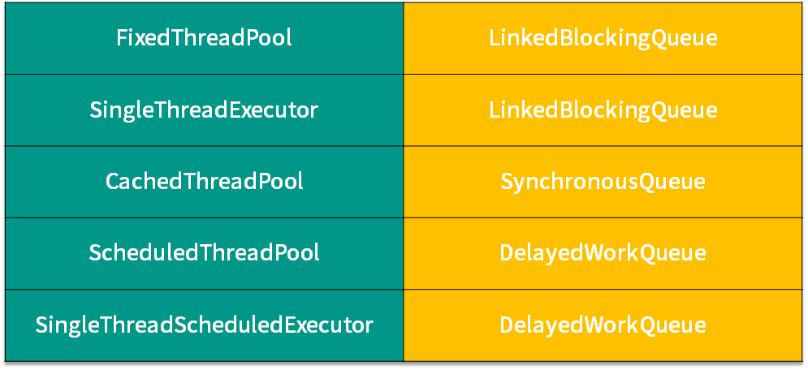

- 00 由点及面，搭建你的 Java 并发知识网.md.html
- 01 为何说只有 1 种实现线程的方法？.md.html
- 02 如何正确停止线程？为什么 volatile 标记位的停止方法是错误的？.md.html
- 03 线程是如何在 6 种状态之间转换的？.md.html
- 04 waitnotifynotifyAll 方法的使用注意事项？.md.html
- 05 有哪几种实现生产者消费者模式的方法？.md.html
- 06 一共有哪 3 类线程安全问题？.md.html
- 07 哪些场景需要额外注意线程安全问题？.md.html
- 08 为什么多线程会带来性能问题？.md.html
- 09 使用线程池比手动创建线程好在哪里？.md.html
- 10 线程池的各个参数的含义？.md.html
- 11 线程池有哪 4 种拒绝策略？.md.html
- 12 有哪 6 种常见的线程池？什么是 Java8 的 ForkJoinPool？.md.html
- 13 线程池常用的阻塞队列有哪些？.md.html
- 14 为什么不应该自动创建线程池？.md.html
- 15 合适的线程数量是多少？CPU 核心数和线程数的关系？.md.html
- 16 如何根据实际需要，定制自己的线程池？.md.html
- 17 如何正确关闭线程池？shutdown 和 shutdownNow 的区别？.md.html
- 18 线程池实现“线程复用”的原理？.md.html
- 19 你知道哪几种锁？分别有什么特点？.md.html
- 20 悲观锁和乐观锁的本质是什么？.md.html
- 21 如何看到 synchronized 背后的“monitor 锁”？.md.html
- 22 synchronized 和 Lock 孰优孰劣，如何选择？.md.html
- 23 Lock 有哪几个常用方法？分别有什么用？.md.html
- 24 讲一讲公平锁和非公平锁，为什么要“非公平”？.md.html
- 25 读写锁 ReadWriteLock 获取锁有哪些规则？.md.html
- 26 读锁应该插队吗？什么是读写锁的升降级？.md.html
- 27 什么是自旋锁？自旋的好处和后果是什么呢？.md.html
- 28 JVM 对锁进行了哪些优化？.md.html
- 29 HashMap 为什么是线程不安全的？.md.html
- 30 ConcurrentHashMap 在 Java7 和 8 有何不同？.md.html
- 31 为什么 Map 桶中超过 8 个才转为红黑树？.md.html
- 32 同样是线程安全，ConcurrentHashMap 和 Hashtable 的区别.md.html
- 33 CopyOnWriteArrayList 有什么特点？.md.html
- 34 什么是阻塞队列？.md.html
- 35 阻塞队列包含哪些常用的方法？add、offer、put 等方法的区别？.md.html
- 36 有哪几种常见的阻塞队列？.md.html
- 37 阻塞和非阻塞队列的并发安全原理是什么？.md.html
- 38 如何选择适合自己的阻塞队列？.md.html
- 39 原子类是如何利用 CAS 保证线程安全的？.md.html
- 40 AtomicInteger 在高并发下性能不好，如何解决？为什么？.md.html
- 41 原子类和 volatile 有什么异同？.md.html
- 42 AtomicInteger 和 synchronized 的异同点？.md.html
- 43 Java 8 中 Adder 和 Accumulator 有什么区别？.md.html
- 44 ThreadLocal 适合用在哪些实际生产的场景中？.md.html
- 45 ThreadLocal 是用来解决共享资源的多线程访问的问题吗？.md.html
- 46 多个 ThreadLocal 在 Thread 中的 threadlocals 里是怎么存储的？.md.html
- 47 内存泄漏——为何每次用完 ThreadLocal 都要调用 remove()？.md.html
- 48 Callable 和 Runnable 的不同？.md.html
- 49 Future 的主要功能是什么？.md.html
- 50 使用 Future 有哪些注意点？Future 产生新的线程了吗？.md.html
- 51 如何利用 CompletableFuture 实现“旅游平台”问题？.md.html
- 52 信号量能被 FixedThreadPool 替代吗？.md.html
- 53 CountDownLatch 是如何安排线程执行顺序的？.md.html
- 54 CyclicBarrier 和 CountdownLatch 有什么异同？.md.html
- 55 Condition、object.wait() 和 notify() 的关系？.md.html
- 56 讲一讲什么是 Java 内存模型？.md.html
- 57 什么是指令重排序？为什么要重排序？.md.html
- 58 Java 中的原子操作有哪些注意事项？.md.html
- 59 什么是“内存可见性”问题？.md.html
- 60 主内存和工作内存的关系？.md.html
- 61 什么是 happens-before 规则？.md.html
- 62 volatile 的作用是什么？与 synchronized 有什么异同？.md.html
- 63 单例模式的双重检查锁模式为什么必须加 volatile？.md.html
- 64 你知道什么是 CAS 吗？.md.html
- 65 CAS 和乐观锁的关系，什么时候会用到 CAS？.md.html
- 66 CAS 有什么缺点？.md.html
- 67 如何写一个必然死锁的例子？.md.html
- 68 发生死锁必须满足哪 4 个条件？.md.html
- 69 如何用命令行和代码定位死锁？.md.html
- 70 有哪些解决死锁问题的策略？.md.html
- 71 讲一讲经典的哲学家就餐问题.md.html
- 72 final 的三种用法是什么？.md.html
- 73 为什么加了 final 却依然无法拥有“不变性”？.md.html
- 74 为什么 String 被设计为是不可变的？.md.html
- 75 为什么需要 AQS？AQS 的作用和重要性是什么？.md.html
- 76 AQS 的内部原理是什么样的？.md.html
- 77 AQS 在 CountDownLatch 等类中的应用原理是什么？.md.html
- 78 一份独家的 Java 并发工具图谱.md.html
38 如何选择适合自己的阻塞队列？
本课时我们主要讲解如何选择适合自己的阻塞队列。
他山之石，可以攻玉。对于如何选择最合适的阻塞队列这个问题，实际上线程池已经率先给我们做了表率。线程池有很多种，不同种类的线程池会根据自己的特点，来选择适合自己的阻塞队列。
所以我们就首先来复习一下这些非常经典的线程池是如何挑选阻塞队列的，借鉴它们的经验之后，我们再去总结一套规则，来归纳出自己在选取阻塞队列时可以对哪些点进行考虑。
线程池对于阻塞队列的选择

下面我们来看线程池的选择要诀。上面表格左侧是线程池，右侧为它们对应的阻塞队列，你可以看到 5 种线程池只对应了 3 种阻塞队列，下面我们对它们进行逐一的介绍。
- FixedThreadPool（SingleThreadExecutor 同理）选取的是 LinkedBlockingQueue
因为 LinkedBlockingQueue 不同于 ArrayBlockingQueue，ArrayBlockingQueue 的容量是有限的，而 LinkedBlockingQueue 是链表长度默认是可以无限延长的。
由于 FixedThreadPool 的线程数是固定的，在任务激增的时候，它无法增加更多的线程来帮忙处理 Task，所以需要像 LinkedBlockingQueue 这样没有容量上限的 Queue 来存储那些还没处理的 Task。
如果所有的 corePoolSize 线程都正在忙，那么新任务将会进入阻塞队列等待，由于队列是没有容量上限的，队列永远不会被填满，这样就保证了对于线程池 FixedThreadPool 和 SingleThreadExecutor 而言，不会拒绝新任务的提交，也不会丢失数据。
- CachedThreadPool 选取的是 SynchronousQueue
对于 CachedThreadPool 而言，为了避免新提交的任务被拒绝，它选择了无限制的 maximumPoolSize（在专栏中，maxPoolSize 等同于 maximumPoolSize），所以既然它的线程的最大数量是无限的，也就意味着它的线程数不会受到限制，那么它就不需要一个额外的空间来存储那些 Task，因为每个任务都可以通过新建线程来处理。
SynchronousQueue 会直接把任务交给线程，而不需要另外保存它们，效率更高，所以 CachedThreadPool 使用的 Queue 是 SynchronousQueue。
- ScheduledThreadPool（SingleThreadScheduledExecutor同理）选取的是延迟队列
对于 ScheduledThreadPool 而言，它使用的是 DelayedWorkQueue。延迟队列的特点是：不是先进先出，而是会按照延迟时间的长短来排序，下一个即将执行的任务会排到队列的最前面。
我们来举个例子：例如我们往这个队列中，放一个延迟 10 分钟执行的任务，然后再放一个延迟 10 秒钟执行的任务。通常而言，如果不是延迟队列，那么按照先进先出的排列规则，也就是延迟 10 分钟执行的那个任务是第一个放置的，会放在最前面。但是由于我们此时使用的是阻塞队列，阻塞队列在排放各个任务的位置的时候，会根据延迟时间的长短来排放。所以，我们第二个放置的延迟 10 秒钟执行的那个任务，反而会排在延迟 10 分钟的任务的前面，因为它的执行时间更早。
我们选择使用延迟队列的原因是，ScheduledThreadPool 处理的是基于时间而执行的 Task，而延迟队列有能力把 Task 按照执行时间的先后进行排序，这正是我们所需要的功能。
ArrayBlockingQueue
除了线程池选择的 3 种阻塞队列外，还有一种常用的阻塞队列叫作 ArrayBlockingQueue，它也经常被用于我们手动创建的线程池中。
这种阻塞队列内部是用数组实现的，在新建对象的时候要求传入容量值，且后期不能扩容，所以 ArrayBlockingQueue的最大特点就是容量是有限且固定的。这样一来，使用 ArrayBlockingQueue 且设置了合理大小的最大线程数的线程池，在任务队列放满了以后，如果线程数也已经达到了最大值，那么线程池根据规则就会拒绝新提交的任务，而不会无限增加任务或者线程数导致内存不足，可以非常有效地防止资源耗尽的情况发生。
归纳
下面让我们总结一下经验，通常我们可以从以下 5 个角度考虑，来选择合适的阻塞队列：
- 功能
第 1 个需要考虑的就是功能层面，比如是否需要阻塞队列帮我们排序，如优先级排序、延迟执行等。如果有这个需要，我们就必须选择类似于 PriorityBlockingQueue 之类的有排序能力的阻塞队列。
- 容量
第 2 个需要考虑的是容量，或者说是否有存储的要求，还是只需要“直接传递”。在考虑这一点的时候，我们知道前面介绍的那几种阻塞队列，有的是容量固定的，如 ArrayBlockingQueue；有的默认是容量无限的，如 LinkedBlockingQueue；而有的里面没有任何容量，如 SynchronousQueue；而对于 DelayQueue 而言，它的容量固定就是 Integer.MAX_VALUE。
所以不同阻塞队列的容量是千差万别的，我们需要根据任务数量来推算出合适的容量，从而去选取合适的 BlockingQueue。
- 能否扩容
第 3 个需要考虑的是能否扩容。因为有时我们并不能在初始的时候很好的准确估计队列的大小，因为业务可能有高峰期、低谷期。
如果一开始就固定一个容量，可能无法应对所有的情况，也是不合适的，有可能需要动态扩容。如果我们需要动态扩容的话，那么就不能选择 ArrayBlockingQueue ，因为它的容量在创建时就确定了，无法扩容。相反，PriorityBlockingQueue 即使在指定了初始容量之后，后续如果有需要，也可以自动扩容。
所以我们可以根据是否需要扩容来选取合适的队列。
- 内存结构
第 4 个需要考虑的点就是内存结构。在上一课时我们分析过 ArrayBlockingQueue 的源码，看到了它的内部结构是“数组”的形式。
和它不同的是，LinkedBlockingQueue 的内部是用链表实现的，所以这里就需要我们考虑到，ArrayBlockingQueue 没有链表所需要的“节点”，空间利用率更高。所以如果我们对性能有要求可以从内存的结构角度去考虑这个问题。
- 性能
第 5 点就是从性能的角度去考虑。比如 LinkedBlockingQueue 由于拥有两把锁，它的操作粒度更细，在并发程度高的时候，相对于只有一把锁的 ArrayBlockingQueue 性能会更好。
另外，SynchronousQueue 性能往往优于其他实现，因为它只需要“直接传递”，而不需要存储的过程。如果我们的场景需要直接传递的话，可以优先考虑 SynchronousQueue。
在本课时，我们首先回顾了线程池对于阻塞队列的选取规则，然后又看到了 ArrayBlockingQueue 的特点，接下来我们总结归纳了通常情况下，可以从功能、容量、能否扩容、内存结构和性能这 5 个角度考虑问题，结合业务选取最适合我们的阻塞队列。